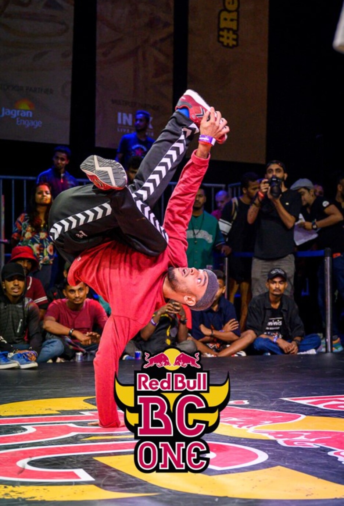

Como pude contar anteriormente, uno de mis pasatiempos son los videojuegos, desde pequeño me gusta jugarlos. Cuando era niño me gustaba ver a mi hermano jugar en el pc, recuerdo que uno de los que veía jugar era Diablo 2, un juego de rol de acción, también el juego de Super Mario 64, en emulador.
Otro de mis pasatiempos es ver películas, disfruto mucho ver películas, siempre trato de ver películas que sean bien calificadas por la crítica, tengo una gran lista de películas que quiero ver, pero que aun no he tenido el tiempo para hacerlo.
En mi adolescencia uno de mis pasatiempos favorito era bailar Breakdance, con mis amigos y mi hermano también, nos poníamos en el garaje de mi casa, con una bocina y así pasamos toda la tarde, practicando y aprendiendo pasos de baile.
